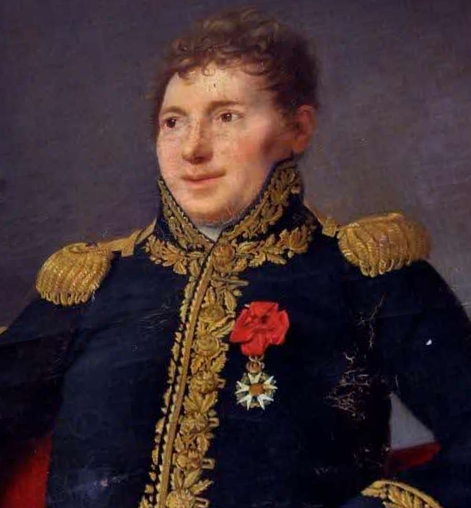
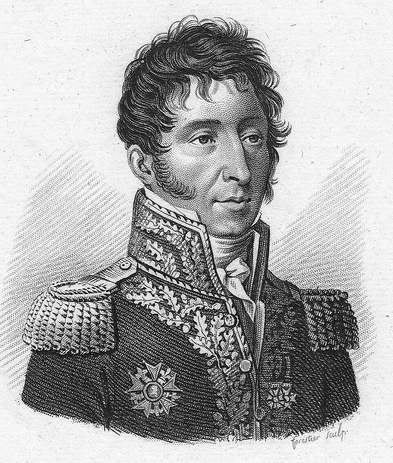
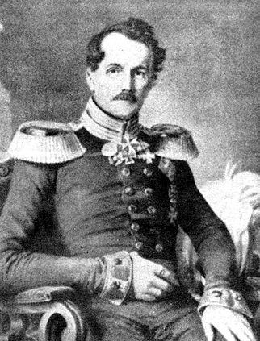
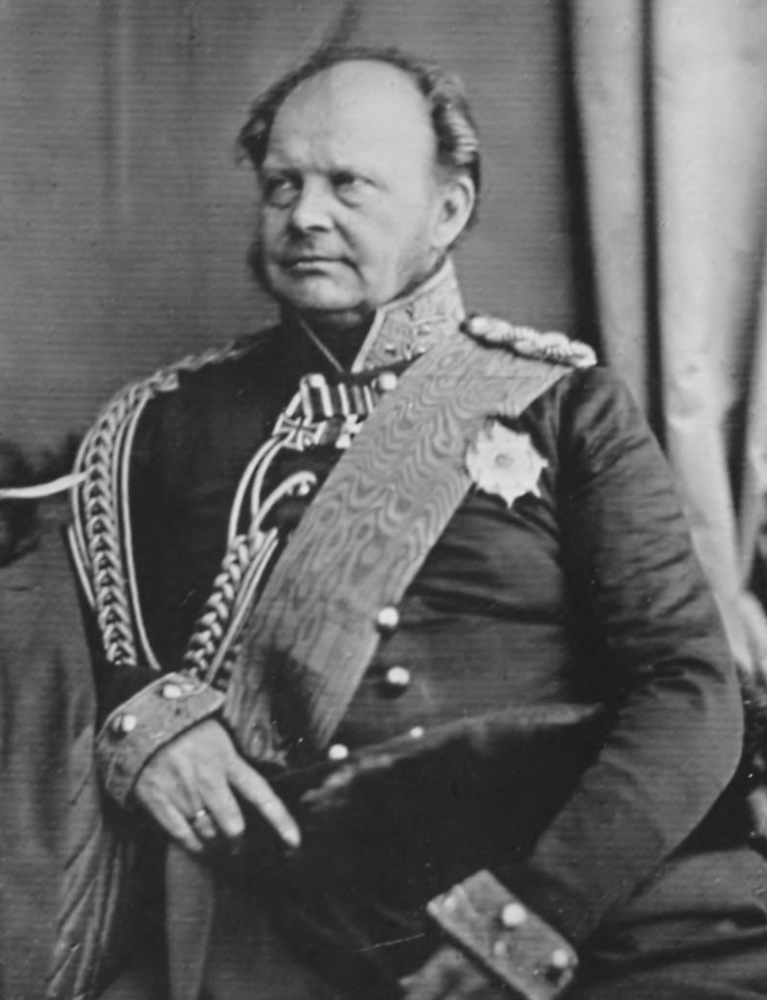
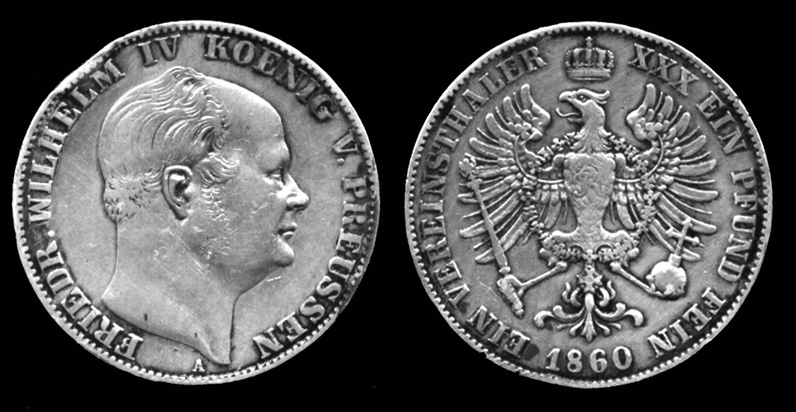
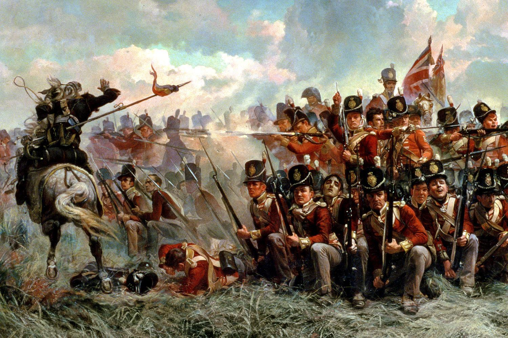

뤼첸 전투 (5) - 뜻하지 않은 부자상봉
게시: 2022-10-03T06:30:29+09:00
나폴레옹의 명령을 받고 4개 마을로 달려가던 네의 제3 군단 휘하에는 총 5개 사단이 있었습니다. 그는 이미 연합군과 4개 마을 및 스타지들에서 교전 중이던 수암 사단과 지라르 사단을 제외한 나머지 3개 사단에게 명령을 내렸는데, 네는 뛰어난 지휘관답게 무작정 4개 마을에 3개 사단 전체를 돌격시키지는 않았습니다. 그 중 마르샹(Marchand) 사단은 아이스도르프(Eisdorf)로 배치했고, 브레니에(Antoine François Brenier de Montmorand) 사단과 리카르(Étienne Pierre Sylvestre Ricard) 사단은 카야 마을 남쪽으로 진격시켰습니다. 그렇게 지시한 뒤 참모들과 함께 먼저 4개 마을로 달려간 네는 현장에 있던 수암 사단과 지라르 사단을 지휘하여 반격에 나섰습니다.

(브레니에 장군입니다. 나폴레옹보다 2살 연상이었던 그는 1807년 포르투갈을 침공한 쥐노(Junot) 휘하에서 사단장으로 복무했는데, 1808년 벌어진 비메이로(Vimeiro) 전투에서 그리 신통치 못한 지휘로 인해 전투도 졌고 본인도 부상을 입고 웰링턴의 포로가 되어야 했습니다. 1년 뒤인 1809년에야 프랑스로 복귀한 그는 이후에도 계속 포르투갈에서 복무했는데, 알메이다 요새에서 장기간 포위되는 등 그리 빛나는 전적을 쌓지는 못했습니다. 뤼첸 전투 이후에는 주로 후방 지역 지휘관이 되었고, 백일천하 때도 프랑스 서부의 항구도시인 브레스트의 수비를 맡고 있었습니다. 덕분에 나폴레옹파로 몰리지는 않아서 부르봉 왕정복고 이후 백작 작위를 받는 등 괜찮은 삶을 살다 갔습니다. 이 초상화는 벽 높은 곳에 걸린 것을 아래에서 스냅샷으로 찍은 모양인지 좀 찌그러졌군요.)

(리카르 장군입니다. 나폴레옹보다 2살 연하였던 그는 수셰(Suchet) 장군의 부관으로 활동하다 1805년부터 술트(Soult)의 부관이 되면서부터 출세길을 달렸습니다. 아우스테를리츠와 예나 전투에서 연달아 술트를 도와 공을 세운 그는 1806년에야 장군으로 승진했습니다. 1808년 겨울, 무어 장군의 영국군을 추격하던 술트는 영국군이 코루냐에서 극적으로 탈출한 뒤, 그대로 포르투갈을 침공했는데, 이때 술트가 포르투갈의 왕위에 올라 니콜라 1세가 되려고 할 때 가장 앞장서서 그를 부추긴 사람이 바로 그의 참모장 리카르였습니다. 그러나 술트의 포르투갈 정복은 이미 다들 아시다시피 웰링턴에 의해 분쇄되었지요. 패장이 된 술트는 나폴레옹에 의해 크게 질책 받았지만 결국 '난 자네에 대해 아우스테를리츠 외에는 기억하는 바가 없네'라는 다정한 말과 함께 용서를 받았습니다. 그러나 리카르는 그렇지 못해서 거의 2년 동안이나 아무 보직을 받지 못했습니다. 그러나 결국 술트가 손을 써서 군에 복직했고, 러시아 원정에서는 막도날의 제10 군단 소속으로 복무했습니다. 그런 아픈 기억 때문인지, 그는 백일천하 때 나폴레옹이 아니라 부르봉 왕정을 택했고 그 덕택에 백작의 작위도 받았습니다.) 프랑스군이 네의 도착과 3개 사단 증원으로 기세를 올리는 것에 비해, 연합군은 미숙한 지휘로 인해 자신들의 장점을 전혀 살리지 못하고 있었습니다. 연합군은 전체 숫자에서는 프랑스군에 뒤졌지만, 기병과 포병 숫자에서는 프랑스군을 압도했습니다. 그래서 맨 처음 4개 마을을 공격해들어갈 때도 포병을 앞세웠고, 4개 마을 남쪽에서 블뤼허가 보병으로 쳐들어갈 때 빌헬름 왕자가 지휘하는 기병대와 포병대가 4개 마을의 서쪽을 우회하여 포위하는 것을 목표로 했던 것입니다. 마을 밖으로 쫓겨난 프랑스 보병들은 허허벌판에서는 기병들과 포병들의 밥이 될 뿐이었을테니까요. 그런데 블뤼허는 4개 마을 중 3개 마을을 손에 넣고도 포병대를 전진시킬 생각을 못했고, 빌헬름 왕자도 스타지들에서 지라르의 프랑스군을 발견하고는 그저 비트겐슈타인의 지시만 기다리며 더 전진하지 않고 대기만 하고 있었습니다. 빌헬름 왕자가 원래 계획대로 4개 마을 북쪽의 평원을 기병대로 장악하고 있었다면 네의 보병 사단들이 그렇게 쉽게 4개 마을로 진입하지는 못했을 것입니다. 결국 네의 지휘 하에, 총 3개 사단의 프랑스군이 결연한 공격을 시작하자 2개 여단의 프로이센군은 어쩔 수 없이 밀려날 수 밖에 없었습니다. 뒤늦게 빌헬름 왕자의 기병대가 프랑스군의 측면을 공격했으나 별 효과가 없었고, 그로스괴르쉔까지 쫓겨난 블뤼허가 이제서야 전체 포병대인 104문의 대포를 불러들여 그로스괴르쉔을 프랑스군으로부터 간신히 지켜냈습니다.

(뢰더 장군입니다. 나폴레옹보다 1살 연상이었던 그는 할아버지 때부터 프리드리히 대왕 밑에서 복무한 전통적 프로이센 군인 가문 출신이었습니다. 그도 1806년 예나 전투에서 대패를 겪고 결국 프랑스군의 포로가 되어야 했습니다. 이후 러시아 원정에 막도날 휘하의 프로이센 원정군으로 참여하여 요크 장군 밑에서 복무하던 그는 1812년말 요크 장군이 러시아군의 회유를 놓고 고민하자 프랑스를 배신하고 러시아 측에 붙어야 한다고 적극 권유했습니다.) 연합군도 순순히 물러나지 않았습니다. 블뤼허는 뢰더(Friedrich Erhard von Röder)의 여단 등을 추가로 불러들여 병력을 증강한 뒤 포병대와 함께 반격을 개시했고, 4개 마을에서는 난전이 벌어져 각 마을의 주인이 계속 뒤바뀌었습니다. 결국 블뤼허는 프로이센 근위대를 포함한 모든 예비대를 다 투입하는 지경에 이르렀는데, 이 근위대 속에는 프리츠(Fritz)라는 애칭으로 불리던 프로이센의 왕세자와, 국왕의 조카이자 프리츠의 사촌인 프리드리히 왕자가 소속되어 있었고, 10대 후반의 이 귀하신 왕자들까지 난전에 휘말렸습니다. 처음에는 정말 구경거리로서 모나쉔휘겔 언덕에서 이 전투를 구경하던 프로이센 국왕 프리드리히 빌헬름은 사전에 들은 설명과는 달리 저 아래의 전투가 격렬해지며 자기 아들까지 직접 전투에 투입되자 가만히 앉아 있을 수가 없었습니다. 오후 2시경 그는 부관인 헨켈(Henckel von Donnersmarck)을 대동하고 전투가 한창인 4개 마을 현장으로 달려갔고, 근위대가 프랑스군을 막 몰아낸 카야 마을 북쪽 언저리까지 가서 마침내 부자 상봉을 했습니다. 며칠 뒤 프리츠 왕세자는 자신의 여동생에게 보내는 편지에서 이때 상황을 이렇게 적었습니다. "내가 속한 근위대가 프랑스군과 죽을 힘을 다해 싸우다 그 날 5번째로 프랑스군을 마을에서 막 쫓아냈을 때, 온 마을을 태우고 있던 화염을 뚫고 아버지께서 나타나셨지. 그 광경은 정말! 전체 마을이, 그 모든 참호와 울타리가 모두 시체와 부상병으로 가득차 있었어." 하지만 이 극적인 부자 상봉은 그리 오래 가지 못했습니다. 네 원수가 리카르 사단의 일부 병력까지 투입하며 카야 마을에 대한 공격을 재개하자 위험을 느낀 프리드리히 빌헬름은 결국 마을 밖에서 대기 중이던 브란덴부르크 경기병대로 피신을 해야 했고, 수적으로 밀린 프로이센 근위대는 다시 카야에서 밀려나 크라인괴르쉔 마을로 후퇴했기 때문이었습니다. 결국 다시 모나쉔휘겔 언덕으로 돌아온 프리드리히 빌헬름은 헨켈을 따로 보내 프리츠 왕세자와 프리드리히 왕자를 전투 현장에서 슬그머니 빼내오도록 지시했습니다. 아들과 조카가 모나쉔휘겔에 도착하자 그는 이 왕자들이 자신의 곁에 머물도록 지시하며 '그 정도면 충분했다'라고 치하했습니다.

(프리츠 왕자, 즉 프리드리히 빌헬름의 맏아들이자 훗날 그의 뒤를 이어 프로이센 국왕 프리드리히 빌헬름 4세가 된 Friedrich Wilhelm IV입니다. 이 사진은 52세 때의 모습으로서 1847년 촬영된 것이고, 뤼첸 전투 당시 그는 18세 꽃다운 나이였습니다. 그는 그의 아버지처럼 보수주의자였는데, 그래도 1848년 혁명 때 처음에는 진보주의를 포용하려고 노력하기는 했습니다. 그러나 곧 입장을 바꾸어 무력으로 혁명분자들을 탄압했습니다. 그래도 결국 혁명의 영향을 받지 않을 수는 없었으므로 1849년 전제군주정을 입헌군주제로 바꾸었습니다. 부부금슬은 좋았으나 자식이 없었던 그는 1857년 뇌졸증을 일으킨 뒤 1861년 사망했고, 왕위는 그의 동생이 물려받아 독일 초대 카이저 빌헬름 1세가 됩니다.)

(빌헬름 4세의 얼굴이 새겨진 2탈러(Thaler)짜리 1860년 은화입니다. 그도 그의 동생 빌헬름 1세도 모두 말년에 앞머리가 훤한 대머리였는데, 당시 유럽 사회는 그런 것에 대해서는 별로 상관하지 않는 분위기인지 은화에도 확실한 대머리로 묘사했습니다.)
그러나 충분치 않았습니다. 이때 즈음 마르몽의 제6 군단이 서쪽에서 나타난 것입니다. 마르몽은 휘하의 콩팡(Jean-Dominique Compans) 사단과 보네(Jean-Pierre Bonet) 사단을 스타지들 마을 동쪽에서 4개 마을 쪽으로 전진시켰습니다. 스타지들 마을 동쪽에서 대기 중이던 빌헬름 왕자의 기병대는 비로소 제 역할을 하여 이 프랑스 사단들이 4개 마을의 전투 현장에 접근하지 못하게 막았습니다. 마르몽은 틀림없이 연합군 기병대가 앞을 막아설 것이라고 예측했으므로 이미 이 2개 사단을 총 6개의 거대한 보병방진으로 구성하여 전진시켰기 때문에 빌헬름 기병대는 이들을 격파할 수는 없었고 그저 발걸음을 늦추는 효과만 낼 뿐이었습니다. 그러나 마르몽도 빌헬름 못지 않게 무척 소극적인 태도였습니다. 마르몽은 기병대가 앞을 막아서자 무리하게 전진하지 않았고, 빌헬름도 빈칭게로더의 예비 기병대까지 합세했음에도 불구하고 전체 기병대를 투입하여 무리하게 보병방진을 뚫으려 하지 않았습니다. 마르몽에게나 빌헬름에게나 그럴 이유가 있었습니다.

(이건 워털루 전투에서의 영국군 보병방진입니다만, 나폴레옹 당시 산개된 보병은 기병의 밥이지만 밀집 보병방진은 기병이 절대 깰 수 없는 철옹성이었습니다. 대신 그렇게 밀집된 보병은 포병의 밥이 되었습니다. 따라서 특별히 기-보-포병을 효율적으로 연계시켜 다루는 것이 전술적으로 매우 중요했습니다.)
마르몽은 연합군이 기병 뿐만 아니라 포병에서도 확실한 우위를 가지고 있었으므로, 기병에 대비하여 밀집 보병방진을 짠 채 전진할 경우 곧 적 포병들이 나타나 자신의 군단을 산산조각 낼 것이라고 생각했습니다. 빌헬름의 기병대도 자신들의 역할은 프랑스군이 보병방진을 짜도록 협박하는 것일 뿐, 자신들이 그렇게 적 보병들을 밀집 대형으로 모아 놓으면 그걸 떄려부수는 것은 포병대의 역할이라고 생각했던 것입니다. 실제로 연합군은 68문의 대포를 마르몽 군단 앞에 배열시켰고, 마르몽은 보병대를 스타지들 마을 속으로 후퇴시키고 포병대를 앞세워 별로 효과적이지 않은 포병 대결을 하며 소중한 시간을 때웠습니다. 이렇게 보면 마르몽은 아무런 역할을 하지 못한 것으로 보이지만, 꼭 그렇지는 않았습니다. 비트겐슈타인은 원래 베르크(Burchard Magnus von Berg)의 러시아 사단을 4개 마을 전투에 투입하려 했으나 마르몽 군단이 나타났으므로 거기에 대응하여 경계 병력으로 스타지들 마을 남쪽에서 대치하느라 실제 전투에 투입할 수가 없게 되었습니다. 한편, 이 모든 전황을 파악하려 애쓰고 있던 비트겐슈타인은 머리가 매우 복잡했습니다. 의도했던 것과는 달리 네와 마르몽의 2개 군단과 멱살을 쥐고 떼굴떼굴 구르게 된 그는 이왕 이렇게 된 바에야 여기서 결전을 치른다고 생각하고 베르크 사단 뿐만 아니라 요크 사단까지 모조리 눈 앞의 전투에 투입할까를 고민하고 있었습니다. 그러나 그 와중에 러시아 근위대와 토르마소프가 이끄는 러시아 예비군단이 길을 잘못 들어서는 바람에 예정보다 늦게 도착하게 되었다는 소식이 날아 들었습니다. 여기에는 몇 가지 이유가 있었는데, 그 중 결정적인 것 하나는 알렉산드르가 비트겐슈타인 옆에 참모로 붙여 놓은 짜르의 심복 볼콘스키 대공이 저지른 엄청난 실수 덕분이었습니다. Source : The Life of Napoleon Bonaparte, by William Milligan Sloane Napoleon and the Struggle for Germany, by Leggiere, Michael V
https://en.wikipedia.org/wiki/Antoine_Fran%C3%A7ois_Brenier_de_Montmorand https://en.wikipedia.org/wiki/%C3%89tienne_Pierre_Sylvestre_Ricard https://en.wikipedia.org/wiki/Frederick_William_IV_of_Prussia https://en.wikipedia.org/wiki/Friedrich_Erhard_von_R%C3%B6der https://www.napoleon-series.org/research/biographies/Prussia/PrussianGenerals/c_Prussiangenerals92.html